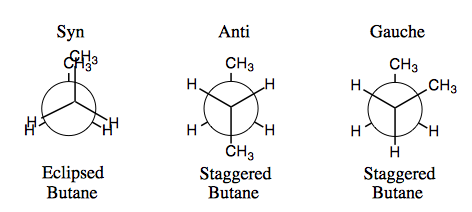
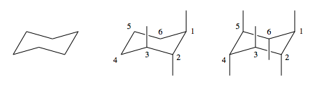
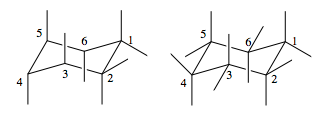
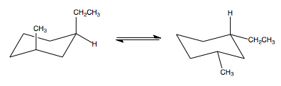
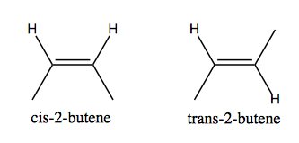

Chapter 3 - Alkanes and Conformations
-
Conformational Representation
• Alkanes can be viewed from different angles. Below are several 3D orientations for ethane.

• As we rotate ethane (1) and lay the molecule flat (2) hydrogen atoms rearrange themselves (3) to prevent crowding or to alleviate torsional strain.
• If we continue to rotate ethane (4) until we look at the carbons head on we get to (5). To better visualize the carbons located in the front and back, we redraw the molecule to look like (6).
• Representation #3 is called a sawhorse drawing.
• Representation #6 is called a Newman projection. A point represents the front carbon and the circle represents the back carbon.
• These representations are used to understand how atoms on a molecule orient themselves in space.
-
Conformations of Alkanes
• Molecules as simple as ethane and butane help us understand the distinct conformations that arise as we encounter higher numbered alkanes.
• Alkanes with more than one carbon can have two distinct conformations: staggered and eclipsed.

• Here we see the two conformations of butane along the C2-C3 bond.
• Methyl groups rotated 0° relative to each other exist in the syn conformation (left).
• Methyl groups rotated 180° relative to each other exist in the anti conformation (center).
• Methyl groups rotated 60° relative to each other exist in the gauche conformation (right).
• The staggered conformations are more stable than eclipsed therefore all molecules exist as a staggered variants.
-
Conformational Analysis of Cyclohexane
• Cyclohexane has a couple of interesting conformational structures.

• The center figure is called the chair conformation. This is its most stable conformation.
• Since carbon has a tetrahedral molecular shape when bonded to four other species, the chair conformation has two other plains.

• The bonds drawn at the labeled carbons are in the axial position. There we have axial hydrogens.
• As we draw the rest of the axial bonds we must take care to alternate the bonds above and below the ring to alleviate torsional strain.

• The same method must be applied for the equatorial bonds.
• Now all we need to do is add some substituents.

• The methyl and ethyl group are pretty bulky compared to hydrogen. Their axial position causes some strain on the molecules stability.
• Cyclohexane molecules often have undergo chair-chair interconversions to which converts all axial bonds to equatorial bonds and vice-versa to achieve a more stable chair conformation.

• The bulkier groups prefer to be equatorial.
-
Stereoisomers
• Stereoisomers are molecules that have their bond connectivity in the same order but their spatial arrangement is different.

• The left figure has methyl groups on the same side to we say they are cis.
• The methyl groups on the right figure on the opposite side so they are trans.
• In cyclohexane, the methyl and ethyl groups have a cis relationship because they are on the same side of the ring molecule.
• The relationship between methyl and hydrogen is trans because they are on opposite sides of the ring.
• In many case trans is the more stable conformation because the molecules are not under any torsional strain.